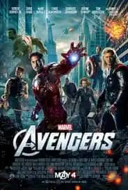
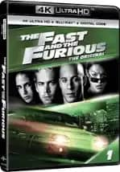
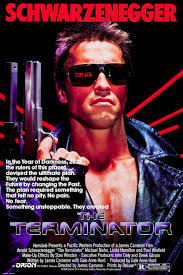
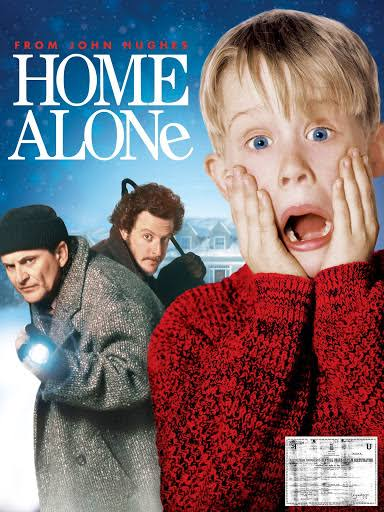

The Avengers is a superhero ensemble franchise in the Marvel Cinematic Universe, uniting characters like Iron Man, Captain America, and Thor. Together, they face cosmic threats, culminating in epic battles to save humanity. Known for its thrilling action and emotional depth, it redefined superhero cinema.
Fast & Furious is an action-packed franchise centered on high-octane street racing, heists, and family bonds. Led by Dominic Toretto (Vin Diesel), the crew navigates global adventures with fast cars and daring stunts. Its evolution from underground racing to espionage action keeps audiences on edge.
This Marvel superhero film follows T’Challa, the king of the technologically advanced African nation of Wakanda, as he rises to the throne following his father’s death

The Terminator is a sci-fi action franchise featuring a dystopian battle between humans and Skynet, an AI system that sends cyborg assassins back in time. The iconic character, portrayed by Arnold Schwarzenegger, fights to either eliminate or protect key human figures. Its blend of thrilling action and futuristic themes has made it a cultural phenomenon.
Home Alone is a comedy classic where mischievous young Kevin McCallister, accidentally left behind during Christmas, defends his home from two bumbling burglars. Using creative traps and humor, Kevin thwarts their plans. It’s a heartwarming tale of family, resilience, and holiday spirit.
